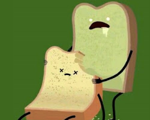

Why you should follow us?
"Are you tired of boring, bland food? Do you want
to learn how to cook delicious, exciting meals
that will tantalize your taste buds? Then you need
to follow our food blog!
We're not just your average food bloggers. We're funny,
we're creative, and we know how to cook. We'll teach
you how to make everything from simple weeknight meals
to elaborate dishes for special occasions.
But we're not just about the food. We also love to have
fun. We'll share stories about our cooking adventures,
give you tips on how to save money on groceries, and
even teach you how to make your own favorite drinks!
So what are you waiting for? Follow our food blog
today and start cooking your way to deliciousness!

We have a wide variety of recipes to choose from, so
you're sure to find something you'll love.
Our recipes are easy to follow, even for beginners.
We provide step-by-step instructions to help you
along the way. We test all of our recipes before
we publish them, so you can be sure they're delicious.
We're always adding new recipes, so you'll never get bored.
We're a friendly and supportive community, so you
can ask questions and get help from other cooks.